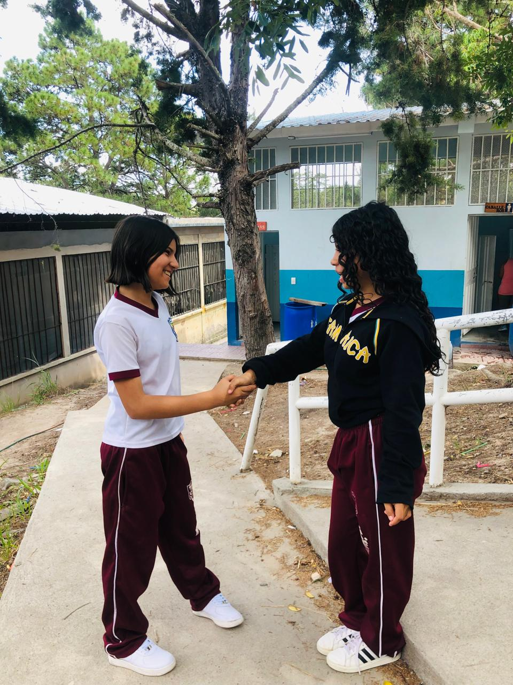
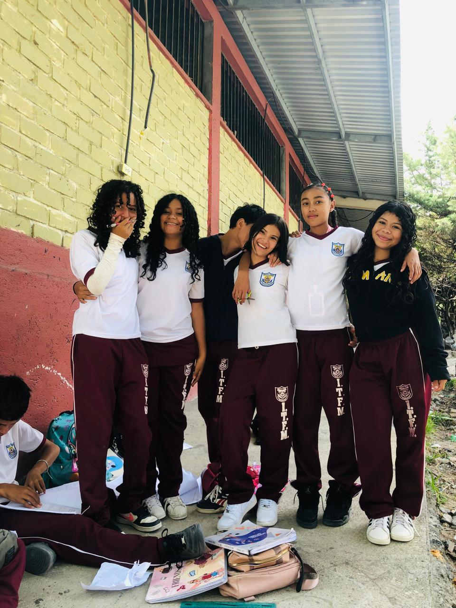
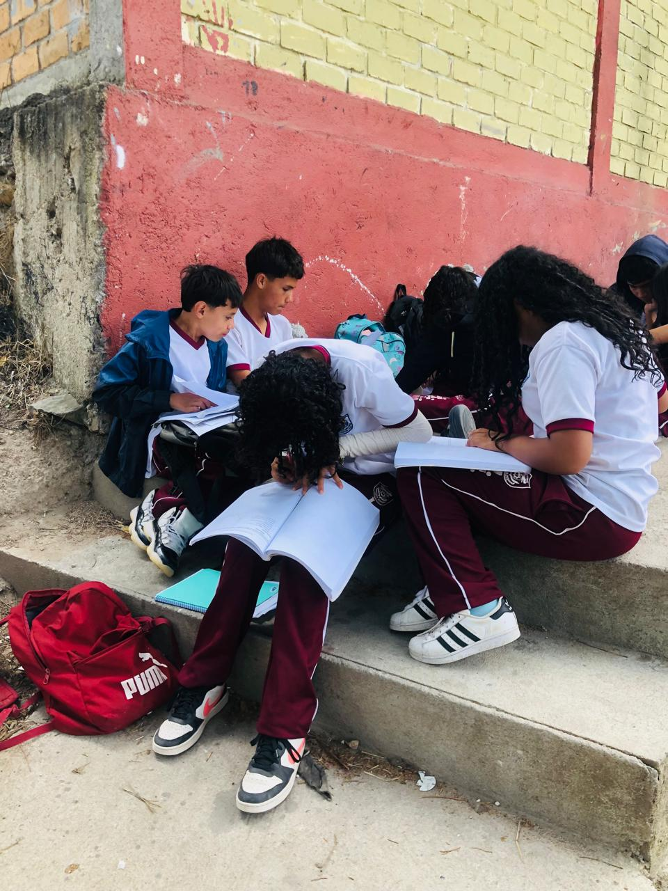
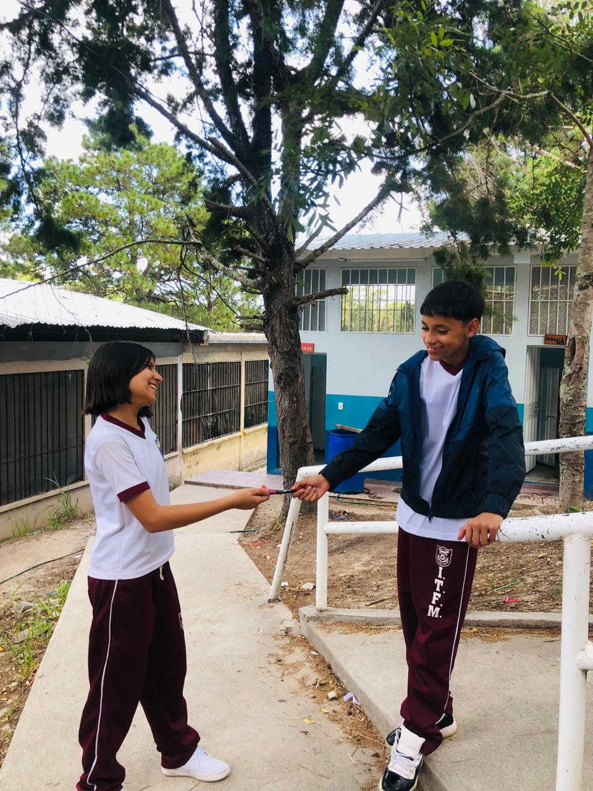
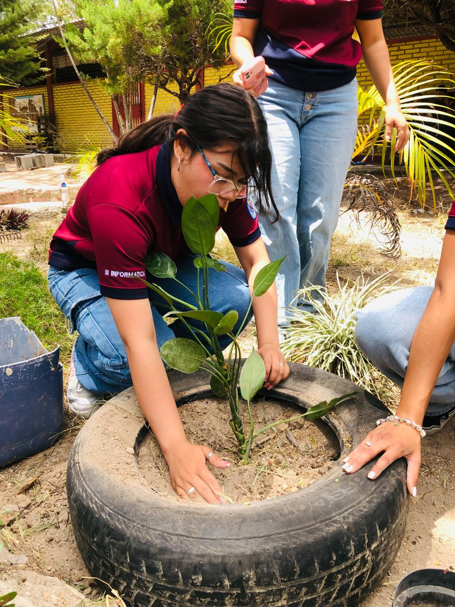

Informática
TecnologÃa, innovación y desarrollo al servicio del futuro.
Conocer másFormamos jóvenes competentes, éticos y comprometidos con su comunidad y con su futuro.
El Instituto Gubernamental Técnico Francisco Miranda trabaja para brindar una educación integral, formando estudiantes con conocimientos, valores, disciplina y compromiso.
Nuestra comunidad educativa impulsa el desarrollo académico, técnico, cultural y deportivo de nuestros jóvenes.
Conocer nuestra historia


.jpg)
Formación profesional para preparar a nuestros estudiantes para los desafÃos del futuro.
TecnologÃa, innovación y desarrollo al servicio del futuro.
Conocer másFormación para administrar recursos con responsabilidad y eficiencia.
Conocer másInnovación y calidad en procesos agroindustriales.
Conocer másFormación musical, disciplina, trabajo en equipo y pasión.
Actividad fisica, compñerismo y desarrollo deportivo.
Espacios prácticos para aprender haciendo.
Conocer másFormación integral basada en principios y ética.
Conocer másValores y Ética
Los pilares que forman nuestro carácter, fortalecen la convivencia y guían cada paso en nuestra comunidad estudiantil.

01Base de toda convivencia dentro de la institución. Implica valorar la dignidad, las opiniones y las diferencias de cada compañero, docente y miembro del personal, manteniendo la armonía en aulas y talleres.

02Reflejado en la vocación por aprender, la solidaridad y el compromiso genuino de ayudar a quien lo necesita. Es ponerle corazón a cada proyecto técnico y a la convivencia diaria.

03Asumir con seriedad los deberes académicos, el cuidado del equipo tecnológico y de los talleres, demostrando madurez y compromiso ante los retos de nuestra formación técnica.

04Actuar siempre con la verdad y la transparencia en las evaluaciones y en el trato cotidiano. Ser íntegros significa hacer lo correcto por convicción propia en todo momento.

05Trabajar en equipo, apoyarnos mutuamente en los momentos difíciles y recordar que el éxito personal también se construye tendiéndole la mano al compañero que va al lado.
Conoce a quienes forman parte de nuestra comunidad educativa.


Conoce nuestra comunidad, instalaciones y actividades.
Fachada principal del instituto
Educación, valores, talento y compromiso al servicio de nuestra comunidad.